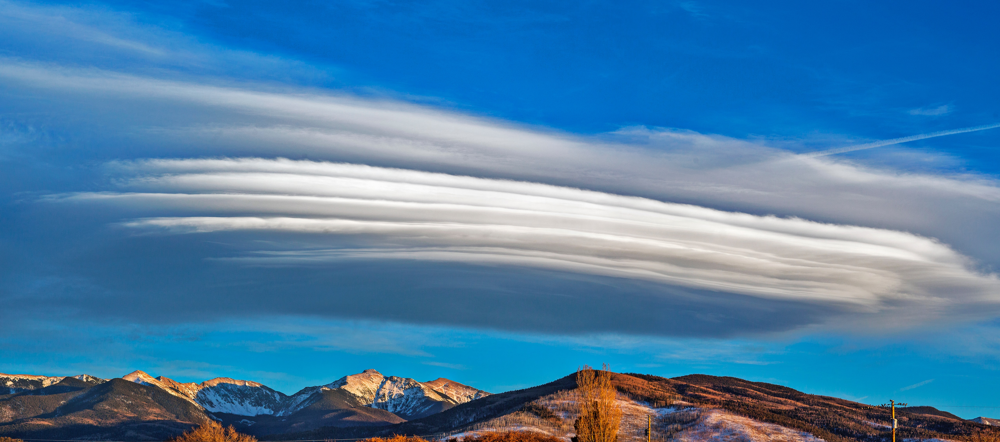
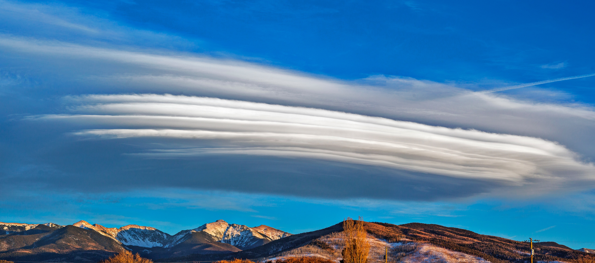
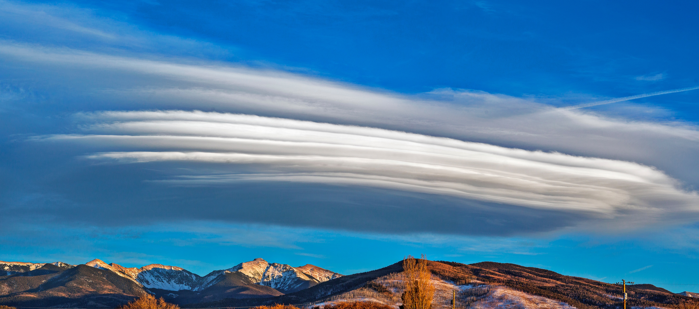
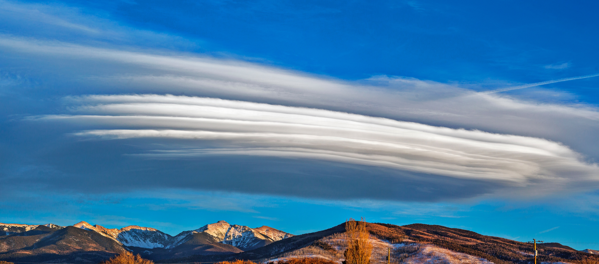

Um cúmulo-nimbo ou, em latim cumulonimbus, é um tipo de nuvem caracterizada por um grande desenvolvimento vertical. Tipicamente, surge a partir do desenvolvimento de cúmulos que, por ação de ventos convectivos ascendentes, ganham massa e volume e passam a ser cumulus congestus e, no auge de sua evolução, torna-se um cúmulo-nimbo
Cirros ou Cirrus são nuvens filiformes que se formam na alta troposfera a 10 000 metros de altitude, numa temperatura ambiente inferior a 0 °C. São por isso constituídas por microscópicos cristais de gelo, que devido à ação dos ventos de grande altitude ficam com a aparência de novelos muito finos de cabelo branco («cirrus» em latim significa exatamente «cachos de cabelo»).
Nuvens Lenticulares são formações estacionárias de nuvens, com formato análogo a fogo e lentes, que se formam em altitude. Normalmente alinhadas com a perpendicular da direção do vento, elas podem ser separadas em altos-cúmulos lenticulares estacionários (ACSL), estratocúmulos lenticulares estacionários (SCSL), e Cirrocumulus lenticulares estacionários (CCSL).